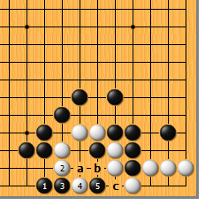
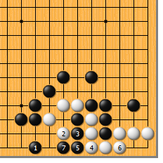
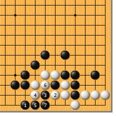
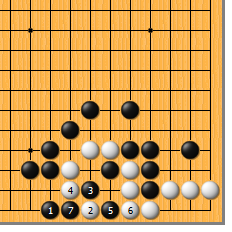
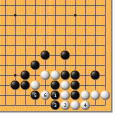
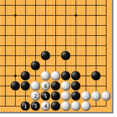
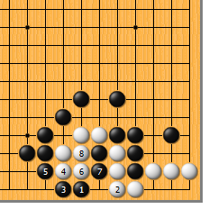

|  |  | |
| 图1 黑1跳，冷静的好手。白2如长，黑3爬，白4扳时，黑5靠打，时机正好！接下来，白如a位粘，黑b位吃白接不归；白如c位粘，黑a位提即可，a位一子一定不会接不归。
| 图2 黑1跳时，白2如尖，黑3、5连打，白6粘时，黑7拐，恰好渡过。黑1的跳就是瞄 着这个渡。
| |
|
 |
 | |
图3 黑1跳时，白2如果抱吃，黑3扳出即可，白4冲、6打，黑统统都应，反正黑3一子不给你吃，你就活不成。
| 图4 黑1跳时，白2的跳补值得注意。黑3尖、5打，应对得当，白6粘不得已，黑7提通，白万事皆休。 | |
|
 |
 | |
图5 黑1、3连打，先把自己的气撞紧，是典型的俗手。黑5妄图扳过时，白6一挖，黑的美梦彻底破灭。
| 图6 前图的黑5如果再想走本图1位的跳，为时已晚。白2冲、4扑、6打，接不归是肯定的了，这都是气紧惹的祸。 | |
|  | 您的高见 | |
图7 黑1点，虽然有力，可惜不得要领。白2粘，冷静的好手。黑3爬回，白4顶、6团，黑7冲时白8打，总是活棋。白2如走4位先长，黑有2位扑的手段，不可不防。 |